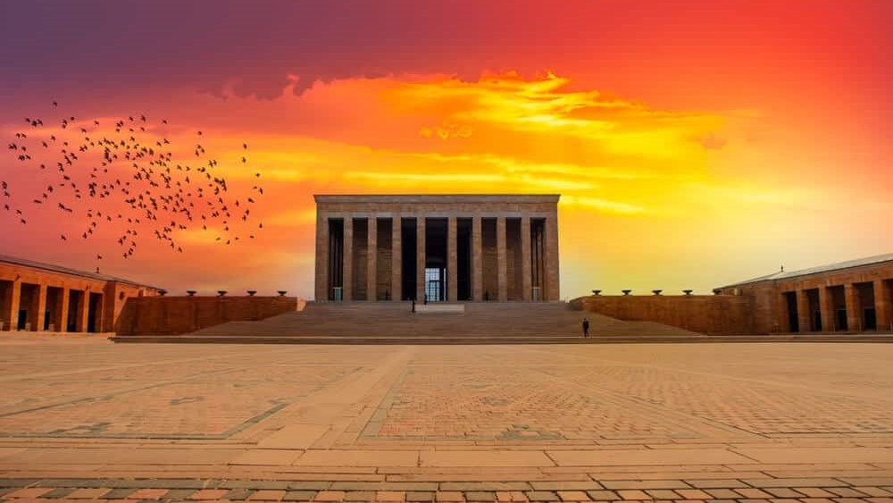
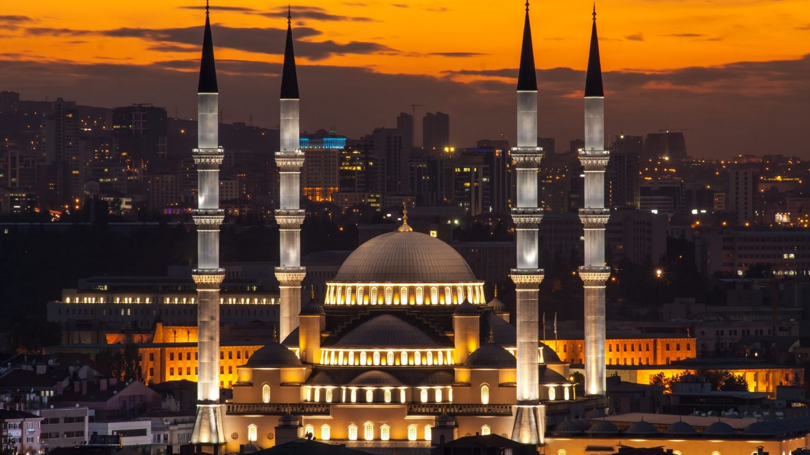
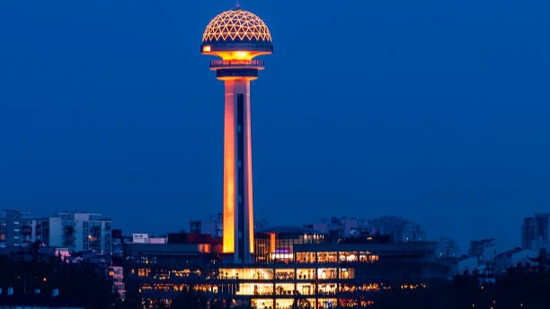

Area
24,521 km
2
Population
5,803,482
Ankara, historically known as Ancyra and Angora, is the capital of Turkey. Located in the central part of Anatolia, the city has a population of 5.1 million in its urban center and 5.8 million in Ankara Province, making it Turkey's second-largest city after Istanbul, but the first by urban area.
Anitkabir
Visit the resting place of Mustafa Kemal Ataturk, founder and first president of The Turkish Republic.
Kocatepe Camii
Enjoy a tour in the largest mosque in Ankara, with a capacity of 24,000 worshippers.
Atakule
Check out the mesmerizing views in Atakule Tower, where you can see the whole city underneath you.